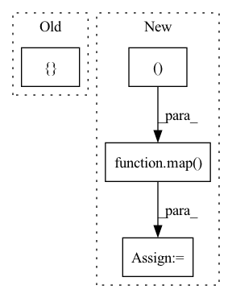

Pattern ID :793
Before Change
get_norm = lambda: nn.LayerNorm(channels)
for index in range(depth):
self.layers.append(nn.ModuleList([ get_attn(max(1, dim_k - index*k_reduce_by_layer)), get_norm()After Change
attn_layer = get_attn(max(1, dim_k - index*k_reduce_by_layer))
ff_layer = get_ff()
attn_layer, ff_layer = map( lambda fn: Residual(PreNorm(channels, fn)), (attn_layer, ff_layer ))
if include_ff:
layers.extend([attn_layer, ff_layer])
else:In pattern: SUPERPATTERN
Frequency: 4
Non-data size: 4
Instances Fragment ID: 2694937
Project Name: tatp22/linformer-pytorch
Commit Name: 8f3208acf42096adf54ab8fca11b5a509d8b4eb9
Time: 2020-07-04
Author: tatp22@gmail.com
File Name: linformer_pytorch/linformer_pytorch.py
M Class Name: Linformer
N Class Name: Linformer
M Method Name: __init__(17)
N Method Name: __init__(18)
M Parent Class: nn.Module
N Parent Class: nn.Module
M File Name: linformer_pytorch/linformer_pytorch.py
N File Name: linformer_pytorch/linformer_pytorch.py
M Start Line: 179
M End Line: 207
N Start Line: 212
N End Line: 238
Before Change
self.layers = nn.ModuleList([])
for i in range(depth):
should_cache = i > 0 and weight_tie_layers
cache_args = { "_cache": should_cache}
self_attns = nn.ModuleList([])
for _ in range(self_per_cross_attn):After Change
get_latent_attn = lambda: PreNorm(latent_dim, Attention(latent_dim, heads = latent_heads, dim_head = latent_dim_head))
get_latent_ff = lambda: PreNorm(latent_dim, FeedForward(latent_dim))
get_latent_attn, get_latent_ff = map( cache_fn, (get_latent_attn, get_latent_ff ))
self.layers = nn.ModuleList([])
cache_args = {"_cache": weight_tie_layers}
Fragment ID: 2694936
Project Name: lucidrains/perceiver-pytorch
Commit Name: dc530de88e6035a2f08d7e35ce23e57abe8371bd
Time: 2021-08-30
Author: lucidrains@gmail.com
File Name: perceiver_pytorch/perceiver_io.py
M Class Name: PerceiverIO
N Class Name: PerceiverIO
M Method Name: __init__(1)
N Method Name: __init__(1)
M Parent Class: nn.Module
N Parent Class: nn.Module
M File Name: perceiver_pytorch/perceiver_io.py
N File Name: perceiver_pytorch/perceiver_io.py
M Start Line: 126
M End Line: 152
N Start Line: 125
N End Line: 143
Before Change
shared_kv_proj = default(shared_kv_proj, attn.to_kv)
attn.to_kv = shared_kv_proj
self.layers.append(nn.ModuleList([
Residual(PreNorm(dim, attn)),
Residual(PreNorm(dim, ff))After Change
shared_kv_proj = default(shared_kv_proj, attn.to_kv)
attn.to_kv = shared_kv_proj
attn, ff = map( lambda fn: Residual(PreNorm(dim, fn)), (attn, ff ))
if seq_len == 1:
memory_is_empty = lambda *args, **kwargs: not exists(kwargs["memory"])
attn = SkipIf(memory_is_empty, attn) Fragment ID: 2694938
Project Name: lucidrains/feedback-transformer-pytorch
Commit Name: 60f98187905b58c55f0a3061201d10a8f7d49122
Time: 2021-02-03
Author: lucidrains@gmail.com
File Name: feedback_transformer_pytorch/feedback_transformer_pytorch.py
M Class Name: FeedbackTransformer
N Class Name: FeedbackTransformer
M Method Name: __init__(1)
N Method Name: __init__(1)
M Parent Class: nn.Module
N Parent Class: nn.Module
M File Name: feedback_transformer_pytorch/feedback_transformer_pytorch.py
N File Name: feedback_transformer_pytorch/feedback_transformer_pytorch.py
M Start Line: 204
M End Line: 213
N Start Line: 217
N End Line: 232
Before Change
self.layers = nn.ModuleList([])
for _ in range(depth):
self.layers.append(nn.ModuleList([
PreNorm(latent_dim, Attention(latent_dim, input_dim, dropout = attn_dropout), context_dim = input_dim),
PreNorm(latent_dim, FeedForward(latent_dim, dropout = ff_dropout)),
PreNorm(latent_dim, Attention(latent_dim, dropout = attn_dropout)),
PreNorm(latent_dim, FeedForward(latent_dim, dropout = ff_dropout))After Change
get_latent_ff = lambda: PreNorm(latent_dim, FeedForward(latent_dim, dropout = ff_dropout))
if weight_tie_layers:
get_cross_attn, get_cross_ff, get_latent_attn, get_latent_ff = map( cache_fn, (get_cross_attn, get_cross_ff, get_latent_attn, get_latent_ff ))
self.layers = nn.ModuleList([])
for _ in range(depth):
self.layers.append(nn.ModuleList([ Fragment ID: 2694940
Project Name: lucidrains/perceiver-pytorch
Commit Name: f0455b6ff59331de8151bf659b62ddf97ac802bd
Time: 2021-03-04
Author: lucidrains@gmail.com
File Name: perceiver_pytorch/perceiver_pytorch.py
M Class Name: Perceiver
N Class Name: Perceiver
M Method Name: __init__(1)
N Method Name: __init__(1)
M Parent Class: nn.Module
N Parent Class: nn.Module
M File Name: perceiver_pytorch/perceiver_pytorch.py
N File Name: perceiver_pytorch/perceiver_pytorch.py
M Start Line: 115
M End Line: 120
N Start Line: 127
N End Line: 142